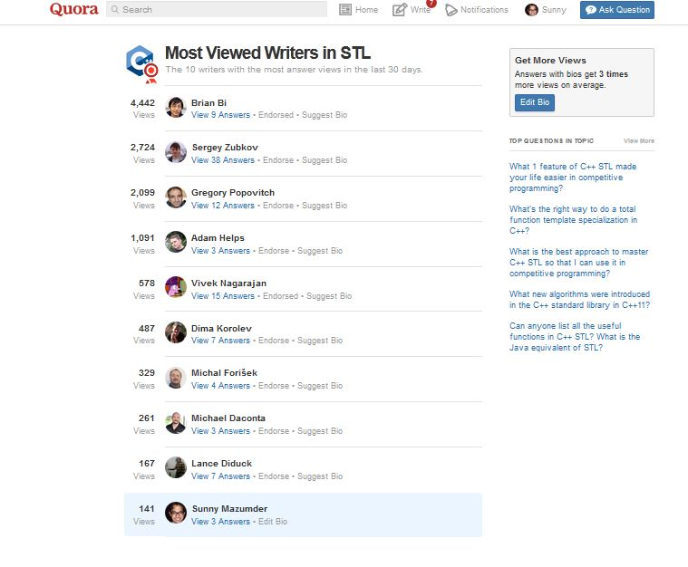

C++ + STL(in-n-out)
C
PYTHON ( Average )
JAVASCRIPT ( Beginner )
JAVA (Moderate)
Assembly (Beginner)
HTML/HTML5 (Moderate)
CSS/CSS3 (Moderate)
C++ (STRUCTURED + OBJECT-ORIENTED + GENERIC(STL)
C++, is my first programming language that I have coded on a serious note. It was in class 11. During class 11 & 12, I have learnt about the basic c -based c++ and OOPs, But I had no idea about STL. It was in college , that I learnt STL and fall in love with it completely. STL is probably the best thing C++ could have.
Over these few years, I have got a quite good hand in C++. I am a deep enthsiast about STL. STL is my bed-time reading.
In the Month of Sep-Oct'15, I was among the list of most viewed write in STL-C++ in Quora. The List included the likes of Misof(Michal Forisek) and others.

95% times I use C++ in competitive programming.
C
In the second semester of college, we had the introduction to programming course where we learnt about C.
However, since I already knew C++ with the power of STL. So there was no way that I will code in plain C unless its compulsory or there's no other way.
PYTHON
Python is my second favorite language after C++. It is probably one of the simplest, elegant and damn powerful language. From competitve programming(very handy with very large numbers) -to-web development(django/flask/etc)-to-data mining -to- Artificial Intelligence, every where python is of prime importance. It is one of the most used language right now. Almost every start up/website that is being build today/recently uses python as its back-end language.
Yeah Many people complains about its slow nature. However, its pretty fast to do stuffs that our brain is unable to find that time lag. Python has its usage-field quite dynamic.
Personally, I am a great fan of python. Its elegance with its simplicity makes it a great combo. I won't say I am excellent in python but yeah I can write decent code in python. The website that you are viewing right now has python in its back-end :)
JAVASCRIPT
I love Javascript for its versatility in web-development.
It can handle the entire web-stack from front-end to back-end to database and what not.
I am a beginner and improving in Javascript.
JAVA
Java is probably the most used language in the industry right now.
I came to hand-in-hand seriously with Java when I started learning android development.
Android is completely based on Java , So You can't just do android programming until and unless you are fluent with Java.
Apart from android, I sometimes(rarely though), also use Java for competitive programming.
ASSEMBLY
I am no expert in Assembly, but do admire the simplicity of the language.
It uses so basic thinking approach that it took my heart.
It teaches how the processor works.It gives some idea regarding : How simply we write some code in high level language, but how it acually work in the machine level.
Thumbs up for assembly!
HTML/HTML5
The simple mark up language which form the base of every website that you see today.
Its pretty simple and staright forward. There' are not much twist.
HTML5 comes with quite decent numbers of tools like canvas etc which are quite exciting.
You can grasp HTML in one day only, if serious.
CSS/CSS3
One of the key feature for UI designers.Can make a dull looking website , super-sexy.
It will take one day to learn its basic usage but can take several months or years to completely master in it.
I can write quite decent css codes for styling websites. Its not that too difficult after all !